Head protection
Abstract
Abstract here - a short statement of the need, findings of project and project outcome.
Team members
- Photo of team
From left to right: Mohammad Aldaihani, Ebraheem Alsaad, Robert Lannom, Alex Button
Problem Statement/overview of the need
This project involves a child who has outbursts and hits things with his head and hands, a solution is needed to keep him from harming himself. A secondary concern is to keep him from damaging objects around him.
Design Specifications
1. Must fit in an 8'x10'x20' space (it is the families basement)
2. Must strong and sturdy
3. Cannot cause injury if hit too hard
Background research
A few things that already exist that can partially fit our needs are punching bags, boxing gloves, helmets, foam pads, etc. All these things are commercially available. These all would be good solutions for this project, but it must be tailored to the child and his families needs. Potential concerns include: the child growing and his temperament about using certain equipment.
Conceptual Design
Summarize your conceptual design process. Develop at least three concepts.
Design Concept 1
- Modified freestanding punching bag
- The modified punching bag will be very sturdy and covered in a layer of a soft material to prevent harm coming to the child playing with it.
Design Concept 2
-Headband and Gloves
-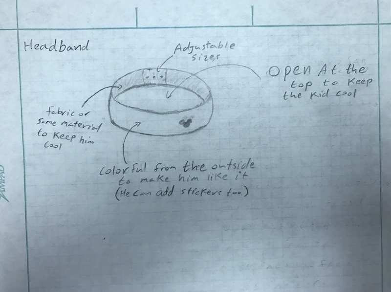
- The kid does not like to wear a helmet, so maybe he will like to wear a colorful headband that he can adjust its size on his head. - The main purpose for this headband is to protect his head, at the same time we have to make him like to wear it.
- Gloves
- the idea of this gloves is to protect kid's hand - he hits the table by his and we need to reduce the injury
the material: leather and sponge
Design Concept 3
Concept: The structure is a padded cylinder that can be accessed via a tunnel in the front or a more open and easy entrance in the back, the base would be hollow to allow weights to be placed in it to prevent it from tipping.
Notes: The tunnel entrance was created to make the structure seem more interesting to a small child allowing him to consider it more of a play area than a punishment area.
Materials: Wood, padding, weights
Evaluate concepts/select candidate
Specifications:
1. protect him from injury
2. he enjoys it and will use it
3. provides some benefit that otherwise he would not have access to
4. keep him from damaging the area around him
5. The product needs to be durable
Punching bag:
The modified punching bag fits into most of the specifications, but it is a solution that the family could get without us.
Helmet Glove combo:
With this project there is a large risk of him rejecting the helmet or gloves, because he is very picky about wearing things and may even see having to wear them as a punishment. also similar to the punching bag, the family can get a helmet and glove elsewhere
Padded Cylinder:
This project is the winner. It meets all the criteria; however due to peer review www decided to expand the scope of the original design
Detailed Design
Description of selected design
Simply put the project is a playroom. A controlled environment where he can receive therapy, play, and be in a controlled and safe environment.
Detailed description of selected design
This project involves eight rigidly connected panels, forming an octagon. The panels are constructed from 2x4 frames which are sheathed in plywood. Covering the inside and outside is foam padding that will protect him from hurting himself. The structure is designed to appear enjoyable so that he will be more willing to utilize it; for example we designed several of the panel frames with windows because he enjoys crawling around playgrounds. Additionally, we decided to include foam padding on the floor as an added safety measure. The color of the foam was selected to make the structure more visually appealing.
Analysis
Describe three types of analysis to be performed on the design
Engineering analysis 1
Engineering analysis 2
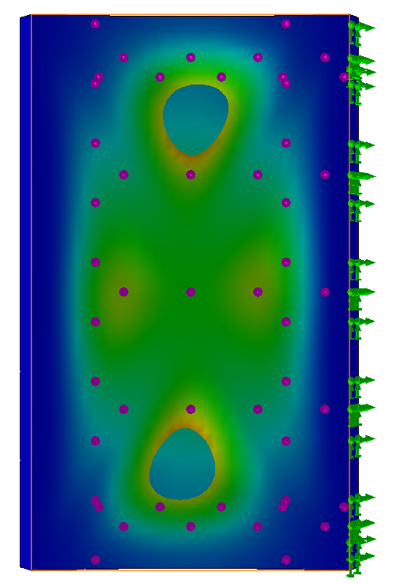
This was a simulation run on SolidWorks to model displacement by an applied force.
Ex: he throws his whole body against the panel
Engineering analysis 3
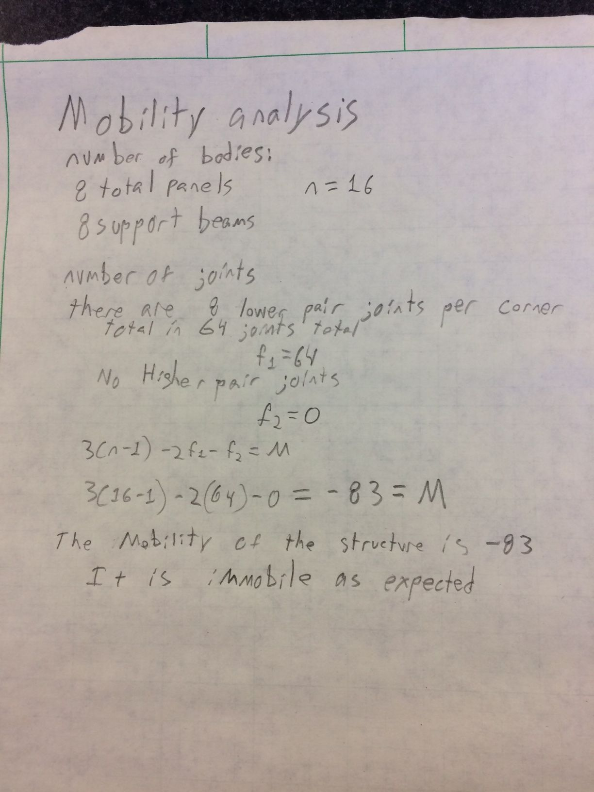
Simple Mobility Analysis
CAD Drawings
The following CAD drawings are of the panels before the foam is added
Tall wall:
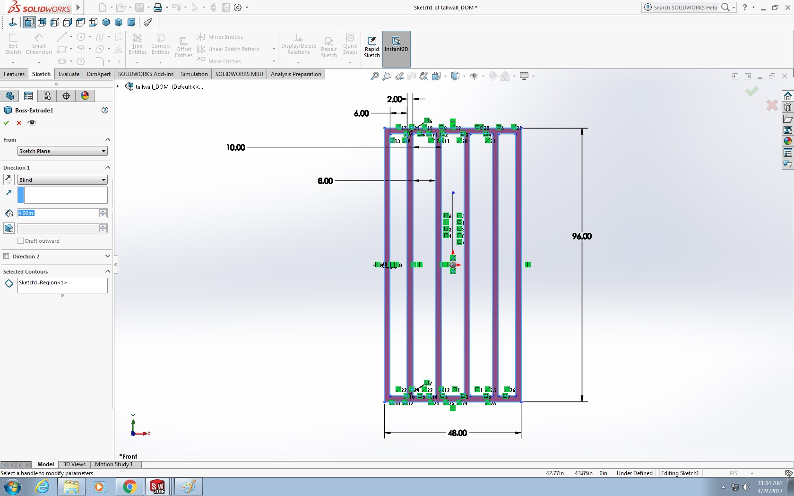
Short wall with a hole:
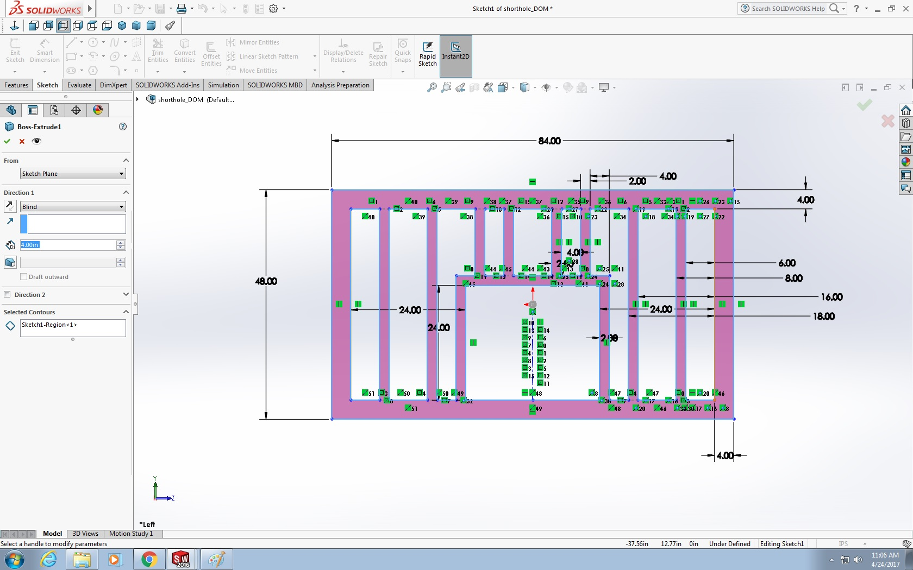
Floor panel:
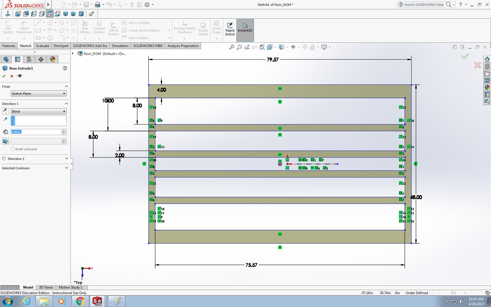
The Assembly:
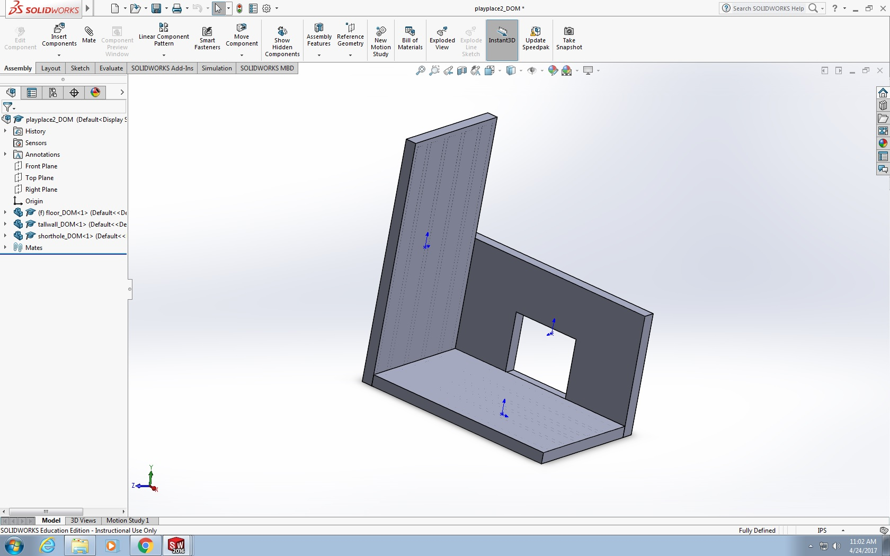
Bill of Materials
| Part Name | Merchant | Part Number | Quantity | Cost per Unit ($) | Total Cost | ||||
|---|---|---|---|---|---|---|---|---|---|
| 6 inch Screws | McMaster-Carr | 91478A650 | 3 | $7.87 | $23.61 | ||||
| Foam | Greatmats | DF22-12 | 28 | $3.96 | $110.88 | ||||
| 2x4s | The Home Depot | 161640 | 20 | $3.05 | $61.00 | ||||
| Plywood | The Home Depot | 166081 | 4 | $21.97 | $87.88 | ||||
| 3.5 inch Screws | McMaster-Carr | 90065A259 | 5 | $7.08 | $35.40 | ||||
| Glue | The Home Depot | 5066 | 1 | $13.57 | $13.57 | ||||
| Support Beams | The Home Depot | 194354 | 6 | $8.17 | $49.02 | ||||
| Heavy Padding | Amazon | B01ISJMB5Q | 1 | $154.58 | $154.58 | Total estimated price: | $535.94 |
Fabrication Process
Phase 1, Measuring: Measure the boards, beams, and plywood to be cut (foam is cut as required later).
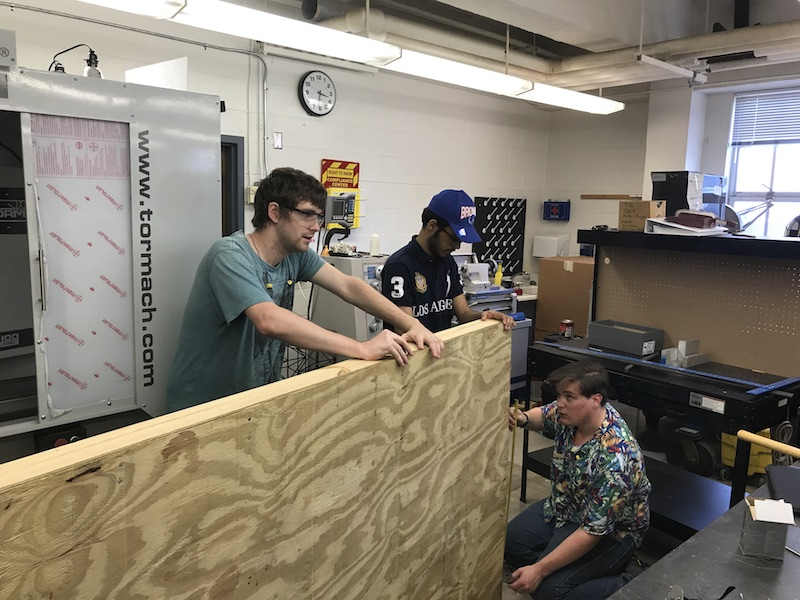
Phase 2, Cutting Wood: Cut the boards, beams, and plywood to size, we used a circular saw, a precision saw depending on the requirements
Phase 3, Assembling Panels: Nail the plywood to the support beams the edges of every panel should have a 2x4 or 4x4 flush with the plywood.
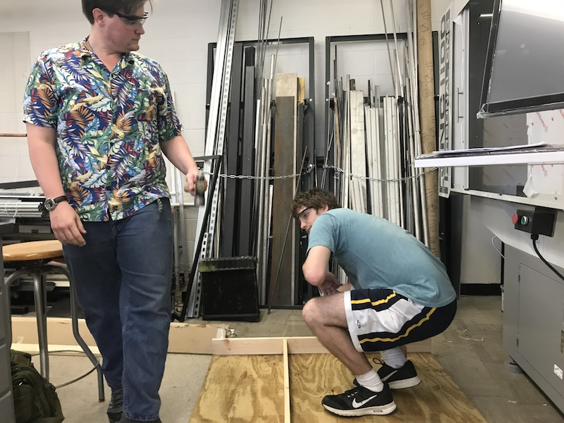
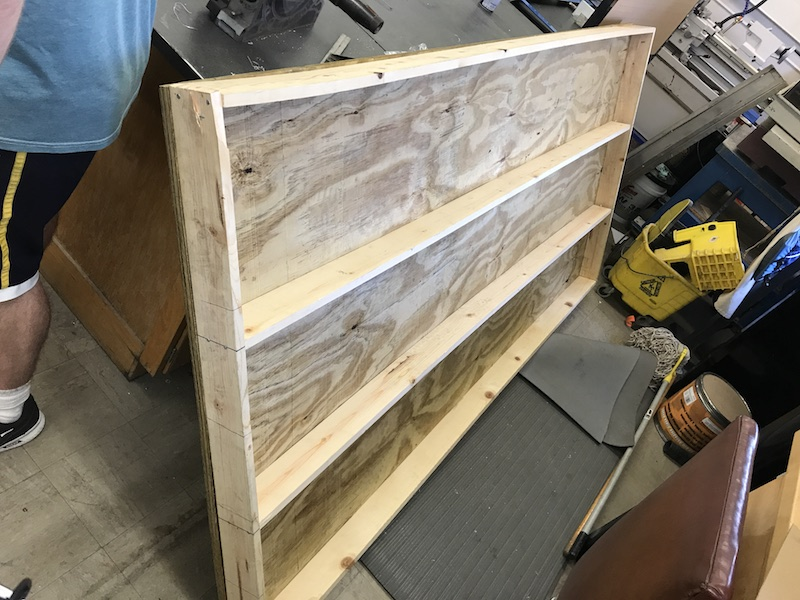
Phase 4, Padding: Padding is glued and nailed into place. Along the broad parts of the panels the padding is glued into place, however along the edges it is nailed or screwed into place due to the difficulty in using glue.
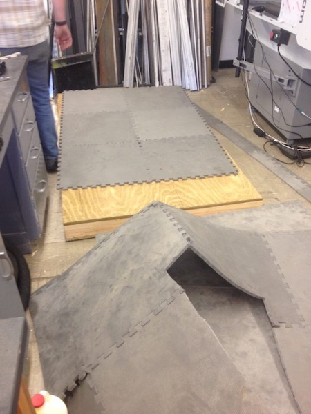
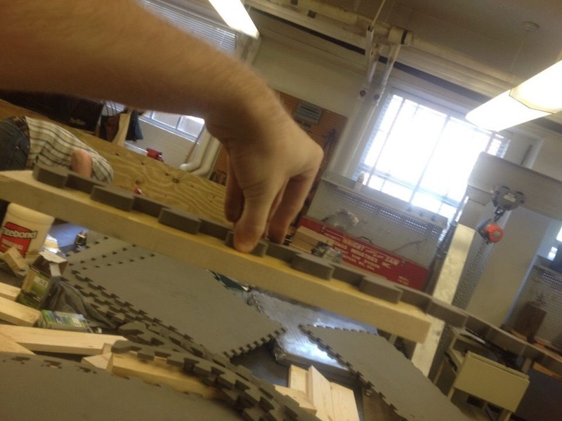
Phase 5, Assembly: The finished project is delivered to the family and fully assembled on site. 3 and 7 inch screws were driven into the panels using a cordless drill and impact driver ensuring a strong connection between the panels.
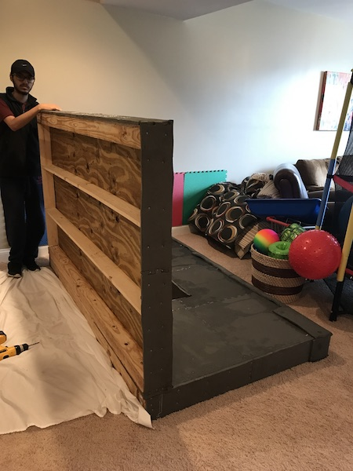
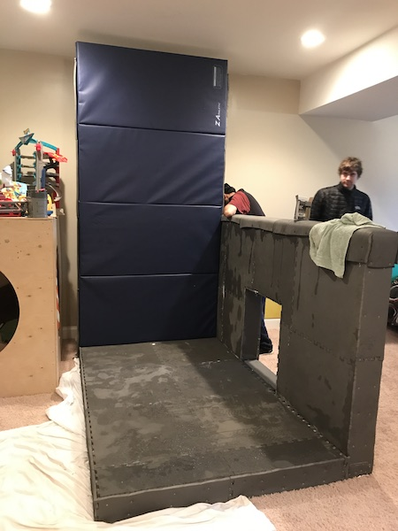
Testing and implementation
The primary concerns regarding testing was the finished design failing to survive the repeated aggressions and destructive tendencies of a small child. As a result our testing was mostly designed around making sure the project wouldn't fall apart. Our testing included testing the foam to ensure that he wasn't likely to harm himself, testing the glue to ensure the foam would stick to the wood, and purposely finding ways a child could hurt themselves. Our testing did reveal some flaws with the design which resulted in us deciding to reinforce the corners of the structure with additional foam to prevent the child from harming himself on a potantially sharp corner.
Photos of Completed design
Instructions for safe use
The project is a large wood and padded structure designed to allow the child it was designed for to play around safely even in the even that he has outbursts that are liable to harm himself. Despite its robust designs some safety protocol still exists in order to avoid injuries or damages.
- In the event that any structural damage occurs (eg. a broken board or a hole in the plywood) immediately cease using it
- The structure is designed to contain the damage the child does to himself and objects around him, it is not a replacement for therapy and is simply designed to limit injuries to himself
- The child should always be observed when playing around the structure
- In the event of minor damage such as peeled padding the damage can be repaired via simply removing the area of foam and replacing it with new foam
Project Summary, Reflection
This project although exhausting has taught us a lot about the engineering process from conceptual design, to practical design, budgeting, and fabrication. Our core design has been heavily redesigned three times since we started on this project starting out as a simple bench and punching bag, turning into a small padded house, and finally into the final design involving two walls and a fully padded floor. Our earliest design had the problem that it served no purpose that couldn't be fulfilled by just purchasing commercial products. Our second design had three issues, first was price which was far above what was acceptable, the second was the fact that it didn't offer enough protection, and the third which wasn't considered until later is that it was far too big for four people to reasonably finish in the allowed time. After realizing the need for a significant redesign we largely kept the original panel design but cut down the number of panels from eight to two panels and a floor. In addition to being significantly cheaper the final design also had padding four times as thick along one wall allowing the child to hit it as hard as he wanted without harming himself. Even after we had finalized and formalized our design we still had to carry out minor modifications as errors and design flaws were revealed.
In summary our project taught us about many areas of the design process in ways we wouldn't have considered without it. We faced numerous obstacles and difficulties and came to understand that the final design often ends up looking completely different than the initial concept as needs and errors change and as what can be accomplished with the budget changes.